マント をドロップするmob一覧
一覧ページへ
| ゴースト | アンデット | 一般1 | ||||||||
|---|---|---|---|---|---|---|---|---|---|---|
 | 笛(410) | 翼(10) | 鍵(10) | マント(230) | イヤリング(210) | ブローチ(150) | 水晶(410) | |||
| イリュージョン | アンデット | 一般2 | ||||||||
 | 笛(380) | 翼(250) | 矢(380) | マント(210) | イヤリング(190) | ブローチ(160) | 水晶(380) | 魔弾(380) | ||
| ファントム | アンデット | 一般3 | ||||||||
 | 笛(360) | 翼(240) | 矢(360) | マント(200) | イヤリング(180) | ブローチ(170) | 水晶(240) | 魔弾(360) | ||
| バンシー | アンデット | セミ1 | ||||||||
| 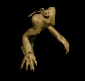 | 笛(390) | 翼(260) | イベント(390) | マント(220) | イヤリング(200) | ブローチ(180) | 水晶(260) | |||
| 幻影 | アンデット | ボス1 | ||||||||
 | 笛(470) | 翼(310) | 鍵(470) | マント(260) | イヤリング(240) | ブローチ(190) | 水晶(310) | |||
| 堕落魔法師 | 人間 | 一般3 | ||||||||
 | 杖(360) | スリング(240) | イベント(360) | マント(200) | 首(180) | 能力向上2(140) | 本(360) | |||
| レッドアイ魔法師 | 人間 | 一般4 | ||||||||
 | ステッキ(300) | 笛(200) | 矢(300) | マント(170) | 冠(150) | ブローチ(180) | 魔弾(300) | |||
| レッドアイ幹部 | 人間 | セミ1 | ||||||||
| 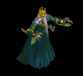 | ステッキ(390) | 鞭(260) | cP回復(390) | マント(220) | 冠(200) | ブローチ(190) | ||||
| レッドアイ元老 | 人間 | セミ2 | ||||||||
| 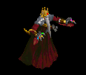 | ステッキ(420) | 笛(280) | 矢(420) | マント(230) | 冠(210) | ブローチ(200) | 魔弾(420) | |||
| レッドアイ法術師 | 人間 | ボス1 | ||||||||
| 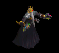 | ステッキ(470) | 杖(310) | 状態異常回復2(120) | マント(260) | 冠(240) | ブローチ(210) | 本(310) | |||
| レッドアイ元帥 | 人間 | ボス2 | ||||||||
 | ステッキ(490) | 笛(330) | 弾(490) | マント(270) | イヤリング(250) | ブローチ(220) | ||||
| レッサーデーモン | 悪魔 | 一般2 | ||||||||
 | 鞭(380) | 牙(250) | 矢(380) | マント(210) | 指輪(190) | 十字架(190) | 双剣(250) | 魔弾(380) | ||
| デビル | 悪魔 | セミ3 | ||||||||
 | 鞭(450) | 牙(300) | 矢(450) | マント(250) | 指輪(230) | 十字架(210) | 双剣(300) | 魔弾(450) | ||
| ゴートマン | 悪魔 | 一般1 | ||||||||
 | 笛(410) | 鈍器(270) | 状態異常回復2(100) | マント(230) | 冠(210) | 能力向上1(160) | ||||
| ホーンド | 悪魔 | セミ1 | ||||||||
 | ステッキ(390) | 翼(260) | 状態異常回復2(100) | マント(220) | 手首(200) | 宝石(160) | 水晶(260) | |||
| ストーンラーバ | 悪魔 | ボス1 | ||||||||
| 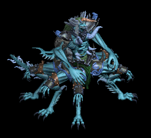 | none(470) | 杖(310) | 鍵(470) | マント(260) | イヤリング(240) | 宝石(190) | 本(310) | |||
| 蟲 | 動物 | 一般1 | ||||||||
 | 鈍器(410) | スリング(270) | イベント(410) | マント(230) | 冠(210) | 帰還(160) | ||||
| リーチ | 動物 | 一般2 | ||||||||
 | 鈍器(380) | 片手剣(250) | イベント(380) | マント(210) | 冠(190) | 帰還(150) | クロー(250) | |||
| マゴット | 動物 | 一般3 | ||||||||
 | 鈍器(360) | スリング(240) | イベント(360) | マント(200) | 冠(180) | 帰還(140) | ||||
| クローラー | 動物 | 一般4 | ||||||||
 | 鈍器(300) | 片手剣(200) | イベント(300) | マント(170) | 冠(150) | 帰還(120) | クロー(200) | |||
| クリーパー | 動物 | セミ1 | ||||||||
 | 鈍器(390) | スリング(260) | イベント(390) | マント(220) | 冠(200) | 帰還(160) | ||||
| ディザースター | 動物 | ボス1 | ||||||||
 | 笛(470) | 翼(310) | イベント(470) | マント(260) | イヤリング(240) | 帰還(190) | 水晶(310) | |||
| ウルフ | 動物 | 一般3 | ||||||||
 | 牙(360) | 弓(240) | 状態異常回復1(360) | マント(200) | 槍投擲機(180) | 特殊1(140) | 双剣(360) | 銃(240) | ||
| 弓張月熊 | 動物 | ボス3 | ||||||||
 | 牙(510) | 鈍器(340) | HP回復(510) | マント(280) | 爪(260) | 宝石(200) | 双剣(510) | |||
| ゴーストEx | アンデット | 一般1 | ||||||||
| 笛(410) | 翼(270) | 鍵(10) | マント(230) | イヤリング(210) | ブローチ(150) | 水晶(270) | |||
| イリュージョンEx | アンデット | 一般2 | ||||||||
| 笛(380) | 翼(250) | 矢(380) | マント(210) | イヤリング(190) | ブローチ(160) | 水晶(250) | 魔弾(380) | ||
| ファントムEx | アンデット | 一般3 | ||||||||
| 笛(360) | 翼(240) | 矢(360) | マント(200) | イヤリング(180) | ブローチ(170) | 水晶(240) | 魔弾(360) | ||
| バンシーEx | アンデット | セミ1 | ||||||||
| 笛(450) | 翼(300) | イベント(450) | マント(250) | イヤリング(230) | ブローチ(180) | 水晶(300) | ||||
| 幻影Ex | アンデット | ボス1 | ||||||||
| 笛(1200) | 翼(800) | 鍵(1200) | マント(670) | イヤリング(600) | ブローチ(190) | 水晶(800) | |||
| 堕落魔法師Ex | 人間 | 一般3 | ||||||||
| 杖(360) | スリング(240) | イベント(360) | マント(200) | 首(180) | 能力向上2(140) | 本(360) | |||
| レッドアイ魔法師Ex | 人間 | 一般4 | ||||||||
| ステッキ(300) | 笛(200) | 矢(300) | マント(170) | 冠(150) | ブローチ(180) | 魔弾(300) | |||
| レッドアイ幹部Ex | 人間 | セミ1 | ||||||||
| ステッキ(450) | 鞭(300) | cP回復(450) | マント(250) | 冠(230) | ブローチ(190) | |||||
| レッドアイ元老Ex | 人間 | セミ2 | ||||||||
| ステッキ(650) | 笛(430) | 矢(650) | マント(360) | 冠(330) | ブローチ(200) | 魔弾(650) | ||||
| レッドアイ法術師Ex | 人間 | ボス1 | ||||||||
| ステッキ(1200) | 杖(800) | 状態異常回復2(300) | マント(670) | 冠(600) | ブローチ(210) | 本(800) | ||||
| レッドアイ元帥Ex | 人間 | ボス2 | ||||||||
| ステッキ(2000) | 笛(1330) | 弾(2000) | マント(1110) | イヤリング(1000) | ブローチ(220) | ||||
| レッサーデーモンEx | 悪魔 | 一般2 | ||||||||
| 鞭(380) | 牙(250) | 矢(380) | マント(210) | 指輪(190) | 十字架(190) | 双剣(250) | 魔弾(380) | ||
| デビルEx | 悪魔 | セミ3 | ||||||||
| 鞭(800) | 牙(530) | 矢(800) | マント(440) | 指輪(400) | 十字架(210) | 双剣(530) | 魔弾(800) | ||
| ゴートマンEx | 悪魔 | 一般1 | ||||||||
| 笛(410) | 鈍器(270) | 状態異常回復2(100) | マント(230) | 冠(210) | 能力向上1(160) | ||||
| ホーンドEx | 悪魔 | セミ1 | ||||||||
| ステッキ(450) | 翼(300) | 状態異常回復2(110) | マント(250) | 手首(230) | 宝石(180) | 水晶(300) | |||
| ストーンラーバEx | 悪魔 | ボス1 | ||||||||
| none(1200) | 杖(800) | 鍵(550) | マント(670) | イヤリング(600) | 宝石(480) | 本(800) | ||||
| ワームEx | 動物 | 一般1 | ||||||||
| 鈍器(410) | スリング(270) | イベント(410) | マント(230) | 冠(210) | 帰還(160) | ||||
| リーチEx | 動物 | 一般2 | ||||||||
| 鈍器(380) | 片手剣(250) | イベント(380) | マント(210) | 冠(190) | 帰還(150) | クロー(250) | |||
| マゴットEx | 動物 | 一般3 | ||||||||
| 鈍器(360) | スリング(240) | イベント(360) | マント(200) | 冠(180) | 帰還(140) | ||||
| クローラーEx | 動物 | 一般4 | ||||||||
| 鈍器(300) | 片手剣(200) | イベント(300) | マント(170) | 冠(150) | 帰還(120) | クロー(200) | |||
| クリーパーEx | 動物 | セミ1 | ||||||||
| 鈍器(450) | スリング(300) | イベント(450) | マント(250) | 冠(230) | 帰還(180) | ||||
| ディザースターEx | 動物 | ボス1 | ||||||||
| 笛(1200) | 翼(800) | イベント(1200) | マント(670) | イヤリング(600) | 帰還(480) | 水晶(800) | |||
| ウルフEx | 動物 | 一般3 | ||||||||
| 牙(360) | 弓(240) | 状態異常回復1(360) | マント(200) | 槍投擲機(180) | 特殊1(140) | 双剣(360) | 銃(240) | ||
| 弓張月熊Ex | 動物 | ボス3 | ||||||||
| 牙(2800) | 鈍器(1870) | HP回復(2800) | マント(1560) | 爪(1400) | 宝石(1120) | 双剣(2800) | |||
| オクトパストンEx | 神獣 | 一般1 | ||||||||
 | 投擲(410) | 牙(270) | イベント(410) | マント(230) | 首(210) | 肩刺青(170) | 双剣(270) | |||
| 凍破Ex | 神獣 | 一般2 | ||||||||
 | 投擲(380) | 牙(250) | イベント(380) | マント(210) | 首(190) | 肩刺青(180) | 双剣(250) | |||
| キャストアイEx | 神獣 | 一般3 | ||||||||
 | 投擲(360) | 牙(240) | イベント(360) | マント(200) | 首(180) | 肩刺青(190) | 双剣(240) | |||
| スノーツリーEx | 神獣 | セミ1 | ||||||||
| 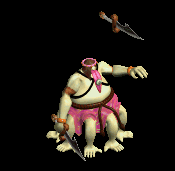 | 投擲(450) | 牙(300) | イベント(450) | マント(250) | 首(230) | 肩刺青(200) | 双剣(300) | |||
| サーリビラエEx | 神獣 | ボス1 | ||||||||
 | 投擲(1200) | 牙(800) | イベント(1200) | マント(670) | 首(600) | 肩刺青(210) | 双剣(800) | |||
| イフリィトEx | 神獣 | セミ2 | ||||||||
| 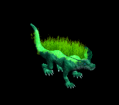 | 弓(650) | ステッキ(430) | 矢(650) | マント(360) | 首(330) | 能力向上2(260) | 銃(650) | 魔弾(650) | ||
| リプリートマーキEx | 神獣 | 一般4 | ||||||||
 | 投擲(300) | 弓(200) | 盾(300) | マント(170) | 指輪(150) | 特殊1(120) | 銃(200) | |||
| ボイドラスターEx | 神獣 | 一般3 | ||||||||
 | 笛(360) | ステッキ(240) | 盾(360) | マント(200) | 指輪(180) | 特殊1(140) | ||||
| ゴーストZin | アンデット | 一般1 | ||||||||
| 笛(1210) | 翼(810) | 鍵(70) | マント(670) | イヤリング(610) | ブローチ(150) | 水晶(810) | |||
| イリュージョンZin | アンデット | 一般2 | ||||||||
| 笛(1380) | 翼(920) | 矢(1380) | マント(770) | イヤリング(690) | ブローチ(160) | 水晶(920) | 魔弾(1380) | ||
| ファントムZin | アンデット | 一般3 | ||||||||
| 笛(1560) | 翼(1040) | 矢(1560) | マント(870) | イヤリング(780) | ブローチ(170) | 水晶(1040) | 魔弾(1560) | ||
| バンシーZin | アンデット | セミ1 | ||||||||
| 笛(650) | 翼(430) | イベント(650) | マント(360) | イヤリング(330) | ブローチ(180) | 水晶(430) | ||||
| 幻影Zin | アンデット | ボス1 | ||||||||
| 笛(1000) | 翼(670) | 鍵(160) | マント(560) | イヤリング(500) | ブローチ(190) | 水晶(670) | |||
| 堕落魔法師Zin | 人間 | 一般3 | ||||||||
| 杖(1560) | スリング(1040) | イベント(1560) | マント(870) | 首(780) | 能力向上2(620) | 本(1560) | |||
| レッドアイ魔法師Zin | 人間 | 一般4 | ||||||||
| ステッキ(1200) | 笛(800) | 矢(1200) | マント(670) | 冠(600) | ブローチ(180) | 魔弾(1200) | |||
| レッドアイ幹部Zin | 人間 | セミ1 | ||||||||
| ステッキ(650) | 鞭(430) | cP回復(650) | マント(360) | 冠(330) | ブローチ(190) | |||||
| レッドアイ元老Zin | 人間 | セミ2 | ||||||||
| ステッキ(750) | 笛(500) | 矢(750) | マント(420) | 冠(380) | ブローチ(200) | 魔弾(750) | ||||
| レッドアイ法術師Zin | 人間 | ボス1 | ||||||||
| ステッキ(1000) | 杖(670) | 状態異常回復2(250) | マント(560) | 冠(500) | ブローチ(210) | 本(670) | ||||
| レッドアイ元帥Zin | 人間 | ボス2 | ||||||||
| ステッキ(1100) | 笛(730) | 弾(1100) | マント(610) | イヤリング(550) | ブローチ(220) | ||||
| レッサーデーモンZin | 悪魔 | 一般2 | ||||||||
| 鞭(1380) | 牙(920) | 矢(1380) | マント(770) | 指輪(690) | 十字架(190) | 双剣(920) | 魔弾(1380) | ||
| デビルZin | 悪魔 | セミ3 | ||||||||
| 鞭(900) | 牙(600) | 矢(900) | マント(500) | 指輪(450) | 十字架(210) | 双剣(600) | 魔弾(900) | ||
| ゴートマンZin | 悪魔 | 一般1 | ||||||||
| 笛(1210) | 鈍器(810) | 状態異常回復2(300) | マント(670) | 冠(610) | 能力向上1(480) | ||||
| ホーンドZin | 悪魔 | セミ1 | ||||||||
| ステッキ(650) | 翼(430) | 状態異常回復2(160) | マント(360) | 手首(330) | 宝石(260) | 水晶(430) | |||
| ストーンラバーZin | 悪魔 | ボス1 | ||||||||
 | none(1000) | 杖(670) | 鍵(1000) | マント(560) | イヤリング(500) | 宝石(400) | 本(670) | |||
| 蟲Zin | 動物 | 一般1 | ||||||||
| 鈍器(1210) | スリング(810) | イベント(1210) | マント(670) | 冠(610) | 帰還(480) | ||||
| リーチZin | 動物 | 一般2 | ||||||||
| 鈍器(1380) | 片手剣(920) | イベント(1380) | マント(770) | 冠(690) | 帰還(550) | クロー(920) | |||
| マゴットZin | 動物 | 一般3 | ||||||||
| 鈍器(1560) | スリング(1040) | イベント(1560) | マント(870) | 冠(780) | 帰還(620) | ||||
| クローラーZin | 動物 | 一般4 | ||||||||
| 鈍器(1200) | 片手剣(800) | イベント(1200) | マント(670) | 冠(600) | 帰還(480) | クロー(800) | |||
| クリーパーZin | 動物 | セミ1 | ||||||||
| 鈍器(650) | スリング(430) | イベント(650) | マント(360) | 冠(330) | 帰還(260) | ||||
| ディザースターZin | 動物 | ボス1 | ||||||||
| 笛(1000) | 翼(670) | イベント(1000) | マント(560) | イヤリング(500) | 帰還(400) | 水晶(670) | |||
| ウルフZin | 動物 | 一般3 | ||||||||
| 牙(1560) | 弓(1040) | 状態異常回復1(1560) | マント(870) | 槍投擲機(780) | 特殊1(620) | 双剣(1560) | 銃(1040) | ||
| 弓張月熊Zin | 動物 | ボス3 | ||||||||
| 牙(1200) | 鈍器(800) | HP回復(1200) | マント(670) | 爪(600) | 宝石(480) | 双剣(1200) | |||
| オクトパストンZin | 神獣 | 一般1 | ||||||||
| 投擲(1210) | 牙(810) | イベント(1210) | マント(670) | 首(610) | 肩刺青(170) | 双剣(810) | |||
| 凍破Zin | 神獣 | 一般2 | ||||||||
| 投擲(1380) | 牙(920) | イベント(1380) | マント(770) | 首(690) | 肩刺青(180) | 双剣(920) | |||
| キャストアイZin | 神獣 | 一般3 | ||||||||
| 投擲(1560) | 牙(1040) | イベント(1560) | マント(870) | 首(780) | 肩刺青(190) | 双剣(1040) | |||
| スノーツリーZin | 神獣 | セミ1 | ||||||||
| 投擲(650) | 牙(430) | イベント(650) | マント(360) | 首(330) | 肩刺青(200) | 双剣(430) | ||||
| サーリビラエZin | 神獣 | ボス1 | ||||||||
| 投擲(1000) | 牙(670) | イベント(1000) | マント(560) | 首(500) | 肩刺青(210) | 双剣(670) | |||
| イフリィトZin | 神獣 | セミ2 | ||||||||
| 弓(750) | ステッキ(500) | 矢(750) | マント(420) | 首(380) | 能力向上2(300) | 銃(750) | 魔弾(750) | |||
| リプリートマーキZin | 神獣 | 一般4 | ||||||||
| 投擲(1200) | 弓(800) | 盾(1200) | マント(670) | 指輪(600) | 特殊1(480) | 銃(800) | |||
| ボイドラスターZin | 神獣 | 一般3 | ||||||||
| 笛(1560) | ステッキ(1040) | 盾(1560) | マント(870) | 指輪(780) | 特殊1(620) | ||||
 | 弓(1560) | 片手剣(1040) | 矢(1560) | グローブ(900) | 手首(780) | 腕刺青(170) | クロー(1040) | 銃(1560) | 魔弾(1560) | |
| ジャイアント骸骨4 Zin | アンデット | ボス2 | ||||||||
 | 杖(270) | マント(450) | 牙(810) | 職業鎧(1170) | 肩刺青(1530) | 杖(1800) | 本(270) | 双剣(810) | ||
| アンデッド魔法師 Zin | アンデット | 一般3 | ||||||||
 | 宝石(40) | マント(70) | 帰還(120) | マント(170) | 矢(220) | HP回復(260) | 魔弾(220) | |||
| アンデッド魔法師1 Zin | アンデット | 一般4 | ||||||||
 | 指輪(30) | マント(50) | 杖(90) | 能力向上1(130) | 矢(170) | グローブ(200) | 本(90) | 魔弾(170) | 魔弾(170) | |
| アンデッド魔法師2 Zin | アンデット | セミ1 | ||||||||
| 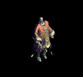 | 鍵(50) | マント(90) | 弾(160) | 手首(230) | 肩刺青(300) | グローブ(350) | ||||
| アンデッド魔法師3 Zin | アンデット | セミ2 | ||||||||
| 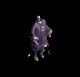 | 能力向上2(80) | マント(140) | cP回復(250) | 十字架(360) | 状態異常回復1(470) | イベント(550) | ||||
| アンデッドライト Zin | アンデット | 一般4 | ||||||||
 | 指輪(30) | マント(50) | 弾(90) | 手首(130) | 状態異常回復1(170) | 宝石(200) | ||||
| アンデッドライト2 Zin | アンデット | セミ2 | ||||||||
| 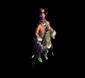 | 指輪(80) | マント(140) | 弾(250) | 手首(360) | 矢(470) | グローブ(550) | 魔弾(470) | |||
| アンデッドライト3 Zin | アンデット | ボス1 | ||||||||
 | 宝石(150) | マント(250) | 腕刺青(450) | 十字架(650) | 肩刺青(850) | HP回復(1000) | ||||
| アンデッドライト4 Zin | アンデット | ボス2 | ||||||||
 | 指輪(270) | マント(450) | 弾(810) | 手首(1170) | 矢(1530) | グローブ(1800) | 魔弾(1530) | |||
| アンデッドメイジ Zin | アンデット | 一般4 | ||||||||
 | 指輪(30) | マント(50) | 弾(90) | 手首(130) | 矢(170) | HP回復(200) | 魔弾(170) | |||
| アンデッドメイジ1 Zin | アンデット | セミ2 | ||||||||
 | 指輪(80) | マント(140) | 腕刺青(250) | 十字架(360) | 状態異常回復1(470) | 宝石(550) | ||||
| アンデッドメイジ2 Zin | アンデット | セミ3 | ||||||||
 | 鍵(110) | マント(180) | 弾(320) | 手首(460) | 矢(600) | グローブ(700) | 魔弾(600) | |||
| アンデッドメイジ3 Zin | アンデット | ボス2 | ||||||||
 | 能力向上2(270) | マント(450) | 杖(810) | 能力向上1(1170) | 矢(1530) | 杖(1800) | 本(810) | 魔弾(1530) | ||
| アンデッドメイジ4 Zin | アンデット | ボス3 | ||||||||
| 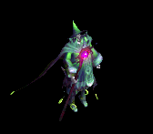 | 指輪(360) | マント(600) | 弾(1080) | 手首(1560) | 肩刺青(2040) | グローブ(2400) | ||||
| アンデッドロック1 Zin | アンデット | セミ1 | ||||||||
| 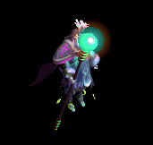 | 指輪(50) | マント(90) | 帰還(160) | 手首(230) | 矢(300) | グローブ(350) | 魔弾(300) | |||
| アンデッドロック2 Zin | アンデット | ボス1 | ||||||||
 | 指輪(150) | マント(250) | 弾(450) | マント(650) | 状態異常回復1(850) | イベント(1000) | ||||
| アンデッドロック3 Zin | アンデット | ボス2 | ||||||||
 | 宝石(270) | マント(450) | 職業鎧(810) | 手首(1170) | 矢(1530) | グローブ(1800) | 魔弾(1530) | |||
| アンデッドロック4 Zin | アンデット | ボス3 | ||||||||
 | 指輪(360) | マント(600) | 腕刺青(1080) | 手首(1560) | 矢(2040) | 杖(2400) | 本(2400) | 魔弾(2040) | ||
| エルフ貴族1 Zin | 人間 | セミ2 | ||||||||
 | 片手剣(140) | マント(410) | 能力向上2(280) | 槍(220) | 槍投擲機(60) | 兜・帽子(80) | クロー(140) | 箒(220) | ||
| ならず者3 Zin | 人間 | セミ2 | ||||||||
| 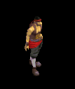 | 宝石(140) | 爪(410) | 宝石(280) | マント(220) | 肩刺青(60) | イベント(80) | ||||
| 格闘家 Zin | 人間 | セミ1 | ||||||||
 | 投擲(90) | 爪(260) | 牙(180) | マント(140) | 肩刺青(40) | イベント(50) | 双剣(180) | |||
| ストリート戦士 Zin | 人間 | セミ2 | ||||||||
 | 能力向上2(140) | マント(410) | 帰還(280) | 笛(220) | 弓(60) | 盾(80) | 銃(60) | |||
| シーク守護者 Zin | 人間 | 一般4 | ||||||||
 | 鎧(50) | 首(150) | 帰還(100) | マント(80) | 腕刺青(20) | 翼(30) | 水晶(30) | |||
| シーク天使2 Zin | 人間 | セミ3 | ||||||||
 | 鍵(180) | マント(530) | スリング(350) | 能力向上2(280) | 状態異常回復1(70) | イベント(110) | ||||
| サキュバス4 Zin | 悪魔 | ボス3 | ||||||||
 | 能力向上2(1560) | イヤリング(1920) | 帰還(790) | マント(480) | 肩刺青(240) | 盾(120) | ||||
| パンプキンヘッド1 Zin | 悪魔 | セミ1 | ||||||||
 | 指輪(230) | 首(280) | マント(120) | 笛(70) | 状態異常回復1(40) | イベント(20) | ||||
| ジャックランタン4 Zin | 悪魔 | ボス3 | ||||||||
 | 指輪(1560) | 弾(1920) | 足(790) | マント(480) | 腰(240) | グローブ(120) | ||||
| ユニコーン Zin | 神獣 | 一般4 | ||||||||
| 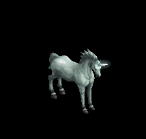 | 冠(90) | マント(130) | 牙(70) | 槍(10) | 弓(20) | 翼(50) | 箒(10) | 双剣(70) | 水晶(50) | 銃(20) |
| ユニコーン1 Zin | 神獣 | セミ1 | ||||||||
 | 冠(160) | マント(230) | 牙(120) | 鎧(20) | 肩刺青(40) | HP回復(90) | 双剣(120) | |||
| ユニコーン3 Zin | 神獣 | ボス2 | ||||||||
 | 冠(810) | マント(1170) | 牙(630) | 槍(90) | cP回復(180) | イベント(450) | 箒(90) | 双剣(630) | ||
| ユニコーン4 Zin | 神獣 | ボス3 | ||||||||
 | 冠(1080) | マント(1560) | 宝石(840) | 鞭(120) | 弓(240) | 翼(600) | 水晶(600) | 銃(240) | ||
| ペガサス Zin | 神獣 | 一般4 | ||||||||
| 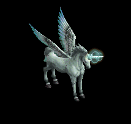 | 冠(90) | マント(130) | 帰還(70) | 鞭(10) | 弓(20) | HP回復(50) | 銃(20) | |||
| ペガサス2 Zin | 神獣 | セミ3 | ||||||||
 | 冠(320) | マント(460) | 宝石(250) | 能力向上1(40) | 弓(70) | 翼(180) | 水晶(180) | 銃(70) | ||
| ペガサス3 Zin | 神獣 | ボス2 | ||||||||
 | 能力向上2(810) | マント(1170) | 腕刺青(630) | 槍(90) | 肩刺青(180) | 翼(450) | 箒(90) | 水晶(450) | ||
| ペガサス4 Zin | 神獣 | ボス3 | ||||||||
 | 冠(1080) | マント(1560) | 牙(840) | 槍(120) | 弓(240) | cP回復(600) | 箒(120) | 双剣(840) | 銃(240) | |
| ブルーウイング Zin | 神獣 | セミ1 | ||||||||
 | 冠(160) | マント(230) | 帰還(120) | 能力向上1(20) | 弓(40) | 翼(90) | 水晶(90) | 銃(40) | ||
| ブルーウイング2 Zin | 神獣 | ボス1 | ||||||||
 | 冠(450) | マント(650) | 牙(350) | 槍(50) | 弓(100) | HP回復(250) | 箒(50) | 双剣(350) | 銃(100) | |
| ブルーウイング4 Zin | 神獣 | ボス3 | ||||||||
 | 能力向上2(1080) | マント(1560) | 牙(840) | 十字架(120) | 弓(240) | イベント(600) | 双剣(840) | 銃(240) | ||
| ゴースト | アンデット | 一般1 | ||||||||
| 笛(410) | 翼(10) | 鍵(10) | マント(230) | イヤリング(210) | ブローチ(150) | 水晶(10) | |||
| 幽霊 | アンデット | 一般2 | ||||||||
| 笛(380) | 翼(250) | 矢(380) | マント(210) | イヤリング(190) | ブローチ(160) | 水晶(250) | 魔弾(380) | ||
| スペクター | アンデット | 一般3 | ||||||||
| 笛(360) | 翼(240) | 矢(360) | マント(200) | イヤリング(180) | ブローチ(170) | 水晶(240) | 魔弾(360) | ||
| スクリマー | アンデット | セミ1 | ||||||||
| 笛(390) | 翼(260) | イベント(390) | マント(220) | イヤリング(200) | ブローチ(180) | 水晶(260) | ||||
| ファントム | アンデット | ボス1 | ||||||||
| 笛(470) | 翼(310) | 鍵(470) | マント(260) | イヤリング(240) | ブローチ(190) | 水晶(310) | |||
| ゴースト Ex | アンデット | 一般1 | ||||||||
| 笛(410) | 翼(270) | 鍵(10) | マント(230) | イヤリング(210) | ブローチ(150) | 水晶(270) | |||
| 幽霊 Ex | アンデット | 一般2 | ||||||||
| 笛(380) | 翼(250) | 矢(380) | マント(210) | イヤリング(190) | ブローチ(160) | 水晶(250) | 魔弾(380) | ||
| スペクター Ex | アンデット | 一般3 | ||||||||
| 笛(360) | 翼(240) | 矢(360) | マント(200) | イヤリング(180) | ブローチ(170) | 水晶(240) | 魔弾(360) | ||
| スクリマー Ex | アンデット | セミ1 | ||||||||
| 笛(450) | 翼(300) | イベント(450) | マント(250) | イヤリング(230) | ブローチ(180) | 水晶(300) | ||||
| ファントム Ex | アンデット | ボス1 | ||||||||
| 笛(1200) | 翼(800) | 鍵(1200) | マント(670) | イヤリング(600) | ブローチ(190) | 水晶(800) | |||
| 堕落魔術師 | 人間 | 一般3 | ||||||||
| 杖(360) | スリング(240) | イベント(360) | マント(200) | 首(180) | 能力向上2(140) | 本(360) | |||
| 堕落魔術師 Ex | 人間 | 一般3 | ||||||||
| 杖(360) | スリング(240) | イベント(360) | マント(200) | 首(180) | 能力向上2(140) | 本(360) | |||
| レッドアイ魔法師 | 人間 | 一般4 | ||||||||
| ステッキ(300) | 笛(200) | 矢(300) | マント(170) | 冠(150) | ブローチ(180) | 魔弾(300) | |||
| レッドアイ隊員 | 人間 | セミ1 | ||||||||
| ステッキ(390) | 鞭(260) | cP回復(390) | マント(220) | 冠(200) | ブローチ(190) | |||||
| レッドアイ隊長 | 人間 | セミ2 | ||||||||
| ステッキ(420) | 笛(280) | 矢(420) | マント(230) | 冠(210) | ブローチ(200) | 魔弾(420) | ||||
| レッドアイ大術師 | 人間 | ボス1 | ||||||||
| ステッキ(470) | 杖(310) | 状態異常回復2(120) | マント(260) | 冠(240) | ブローチ(210) | 本(310) | ||||
| レッドアイ議長 | 人間 | ボス2 | ||||||||
| ステッキ(490) | 笛(330) | 弾(490) | マント(270) | イヤリング(250) | ブローチ(220) | ||||
| レッドアイ魔法師 Ex | 人間 | 一般4 | ||||||||
| ステッキ(300) | 笛(200) | 矢(300) | マント(170) | 冠(150) | ブローチ(180) | 魔弾(300) | |||
| レッドアイ隊員 Ex | 人間 | セミ1 | ||||||||
| ステッキ(450) | 鞭(300) | cP回復(450) | マント(250) | 冠(230) | ブローチ(190) | |||||
| レッドアイ隊長 Ex | 人間 | セミ2 | ||||||||
| ステッキ(650) | 笛(430) | 矢(650) | マント(360) | 冠(330) | ブローチ(200) | 魔弾(650) | ||||
| レッドアイ大術師 Ex | 人間 | ボス1 | ||||||||
| ステッキ(1200) | 杖(800) | 状態異常回復2(300) | マント(670) | 冠(600) | ブローチ(210) | 本(800) | ||||
| レッドアイ議長 Ex | 人間 | ボス2 | ||||||||
| ステッキ(2000) | 笛(1330) | 弾(2000) | マント(1110) | イヤリング(1000) | ブローチ(220) | ||||
| 呪われた悪霊 Ex | 神獣 | 一般4 | ||||||||
| 投擲(300) | 弓(200) | 盾(300) | マント(170) | 指輪(150) | 特殊1(120) | 銃(200) | |||
| 殺人昆虫の大群 | 動物 | ボス1 | ||||||||
| 笛(470) | 翼(310) | イベント(470) | マント(260) | イヤリング(240) | 帰還(190) | 水晶(310) | |||
| 殺人昆虫の大群 Ex | 動物 | ボス1 | ||||||||
| 笛(1200) | 翼(800) | イベント(1200) | マント(670) | イヤリング(600) | 帰還(480) | 水晶(800) | |||
| オクトパス Ex | 神獣 | 一般1 | ||||||||
| 投擲(410) | 牙(270) | イベント(410) | マント(230) | 首(210) | 肩刺青(170) | 双剣(270) | |||
| コルダス Ex | 神獣 | 一般2 | ||||||||
| 投擲(380) | 牙(250) | イベント(380) | マント(210) | 首(190) | 肩刺青(180) | 双剣(250) | |||
| コールドアイ Ex | 神獣 | 一般3 | ||||||||
| 投擲(360) | 牙(240) | イベント(360) | マント(200) | 首(180) | 肩刺青(190) | 双剣(240) | |||
| フリーザー Ex | 神獣 | セミ1 | ||||||||
| 投擲(450) | 牙(300) | イベント(450) | マント(250) | 首(230) | 肩刺青(200) | 双剣(300) | ||||
| クーラー Ex | 神獣 | ボス1 | ||||||||
| 投擲(1200) | 牙(800) | イベント(1200) | マント(670) | 首(600) | 肩刺青(210) | 双剣(800) | |||
| デーモン傭兵 | 悪魔 | 一般1 | ||||||||
| 笛(410) | 鈍器(270) | 状態異常回復2(100) | マント(230) | 冠(210) | 能力向上1(160) | ||||
| ホーンドデーモン | 悪魔 | セミ1 | ||||||||
| ステッキ(390) | 翼(260) | 状態異常回復2(100) | マント(220) | 手首(200) | 宝石(160) | 水晶(260) | |||
| デーモン傭兵 Ex | 悪魔 | 一般1 | ||||||||
| 笛(410) | 鈍器(270) | 状態異常回復2(100) | マント(230) | 冠(210) | 能力向上1(160) | ||||
| ホーンドデーモン Ex | 悪魔 | セミ1 | ||||||||
| ステッキ(450) | 翼(300) | 状態異常回復2(110) | マント(250) | 手首(230) | 宝石(180) | 水晶(300) | |||
| 骸骨魔法師 Zin | アンデット | 一般4 | ||||||||
| 宝石(40) | マント(70) | 帰還(120) | マント(170) | 矢(220) | HP回復(260) | 魔弾(220) | |||
| ユニコーン Zin | 神獣 | 一般4 | ||||||||
| 冠(90) | マント(130) | 牙(70) | 槍(10) | 弓(20) | 翼(50) | 箒(10) | 双剣(70) | 水晶(50) | 銃(20) | |
| 骸骨魔法師 Zin | アンデット | 一般4 | ||||||||
| 宝石(40) | マント(70) | 帰還(120) | マント(170) | 矢(220) | HP回復(260) | 魔弾(220) | |||
| ユニコーン Zin | 神獣 | 一般4 | ||||||||
| 冠(90) | マント(130) | 牙(70) | 槍(10) | 弓(20) | 翼(50) | 箒(10) | 双剣(70) | 水晶(50) | 銃(20) | |
| ボイドラスターEv | 神獣 | 一般3 | ||||||||
| 笛(1560) | ステッキ(1040) | 盾(1560) | マント(870) | 指輪(780) | 特殊1(620) | ||||
| マゴットEv | 動物 | 一般3 | ||||||||
| 鈍器(1560) | スリング(1040) | イベント(1560) | マント(870) | 冠(780) | 帰還(620) | ||||
| ウルフEv | 動物 | 一般3 | ||||||||
| 牙(1560) | 弓(1040) | 状態異常回復1(1560) | マント(870) | 槍投擲機(780) | 特殊1(620) | 双剣(1560) | 銃(1040) | ||
| キャストアイEv | 神獣 | 一般3 | ||||||||
| 投擲(1560) | 牙(1040) | イベント(1560) | マント(870) | 首(780) | 肩刺青(190) | 双剣(1040) | |||
| ファントムEv | アンデット | 一般3 | ||||||||
| 笛(1560) | 翼(1040) | 矢(1560) | マント(870) | イヤリング(780) | ブローチ(170) | 水晶(1040) | 魔弾(1560) | ||
| 堕落魔法師Ev | 人間 | 一般3 | ||||||||
| 杖(1560) | スリング(1040) | イベント(1560) | マント(870) | 首(780) | 能力向上2(620) | 本(1560) | |||
| リプリートマーキEv | 神獣 | 一般4 | ||||||||
| 投擲(1200) | 弓(800) | 盾(1200) | マント(670) | 指輪(600) | 特殊1(480) | ||||
| レッドアイ魔法師Ev | 人間 | 一般4 | ||||||||
| ステッキ(1200) | 笛(800) | 矢(1200) | マント(670) | 冠(600) | ブローチ(180) | 魔弾(1200) | |||
| クローラーEv | 動物 | 一般4 | ||||||||
| 鈍器(1200) | 片手剣(800) | イベント(1200) | マント(670) | 冠(600) | 帰還(480) | クロー(800) | |||
| バンシーEv | アンデット | セミ1 | ||||||||
| 笛(650) | 翼(430) | イベント(650) | マント(360) | イヤリング(330) | ブローチ(180) | 水晶(430) | ||||
| デビルEv | 悪魔 | セミ3 | ||||||||
| 鞭(900) | 牙(600) | 矢(900) | マント(500) | 指輪(450) | 十字架(210) | 双剣(600) | 魔弾(900) | ||
| ゴーストSp | アンデット | 一般4 | ||||||||
| 笛(1200) | 翼(800) | 鍵(100) | マント(700) | イヤリング(600) | ブローチ(150) | 水晶(800) | |||
| ブルーウイングSp | 神獣 | セミ1 | ||||||||
| 冠(1000) | マント(600) | 帰還(400) | 能力向上1(500) | 弓(600) | 翼(800) | 水晶(800) | 銃(600) | ||
| ペガサスSp | 神獣 | セミ1 | ||||||||
| 冠(1080) | マント(1500) | 牙(900) | 槍(120) | 弓(300) | cP回復(600) | 箒(120) | 双剣(900) | 銃(300) | |
| アンデッド魔法師Sp | アンデット | 一般4 | ||||||||
| 宝石(300) | マント(900) | 帰還(400) | 矢(1100) | HP回復(400) | 魔弾(1100) | ||||
| アンデッドライト3 Sp | アンデット | セミ1 | ||||||||
| 宝石(100) | マント(300) | 腕刺青(400) | 十字架(600) | 肩刺青(900) | HP回復(1000) | ||||
| アデッドロック Sp | アンデット | 一般4 | ||||||||
| 宝石(300) | マント(900) | 帰還(400) | 矢(1100) | HP回復(400) | 魔弾(1100) |